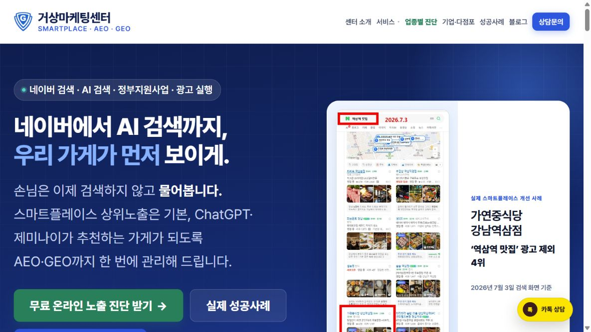

정체성이 보이지 않습니다
첫 화면에서 무엇을 하는 회사인지 알기 어렵습니다.
거상마케팅센터가 사업과 고객을 분석하고, 기획부터 디자인, 콘텐츠, 모바일 최적화, 검색 노출 구조와 배포까지 한 번에 진행합니다.
랜딩페이지 · 기업 홈페이지 · 전문직 홈페이지 · 교육 홈페이지 · 콘텐츠 플랫폼

첫 화면에서 무엇을 하는 회사인지 알기 어렵습니다.
서비스 설명은 많지만 고객이 선택할 이유가 없습니다.
상담 버튼과 신청 동선이 눈에 잘 띄지 않습니다.
작은 화면에서 글씨와 화면 구성이 불편합니다.
블로그·SNS·플레이스와 홈페이지가 연결되지 않습니다.
검색엔진과 AI가 회사를 이해할 정보 구조가 없습니다.
홈페이지는 회사소개서가 아니라 고객을 설득하고 상담으로 연결하는 온라인 영업 시스템이어야 합니다.
누구에게 무엇을 판매하는지부터 명확히 합니다.
고객의 질문과 선택 순서로 페이지를 설계합니다.
강점, 서비스, 사례와 FAQ를 설득력 있게 구성합니다.
SEO·AEO·GEO가 이해할 수 있는 구조를 적용합니다.
상담·예약·구매가 끊기지 않도록 연결합니다.
AI 홈페이지 제작 서비스 출시를 기념하여 포트폴리오 공개 및 제작 후기 제공에 동의한 선착순 10개 업체에 특별가를 적용합니다.
빠른 상품 소개와 상담 신청 확보
검색 유입, 전문성 전달과 상담 전환
지속적으로 상담을 만드는 온라인 영업 자산 구축
모든 금액은 부가세 별도입니다.
도메인, 유료 호스팅, 외부 솔루션 및 유료 플러그인 비용은 별도입니다.
페이지 수, 기능, 원고와 자료 준비 상태에 따라 최종 견적과 일정이 달라질 수 있습니다.
쇼핑몰 결제, 회원관리, 예약 시스템, 다국어, 관리자 기능과 복잡한 외부 API 연동은 별도 협의합니다.
특별가는 실제 선착순 10개 업체에만 적용합니다.
| 비교 항목 | 스타터 | 비즈니스 | 프리미엄 |
|---|---|---|---|
| 페이지 수 | 1페이지 | 5~7페이지 | 10페이지 이상 |
| 기획 | 핵심 섹션 | 사이트맵·페이지 | 맞춤 구조·동선 |
| 반응형 | 포함 | 포함 | 포함 |
| 기본 SEO | 포함 | 포함 | 포함 |
| OG·파비콘 | 기본 | 포함 | 포함 |
| sitemap·robots | — | 포함 | 포함 |
| AEO·GEO 기본 구조 | — | — | 포함 |
| 블로그·콘텐츠 구조 | — | — | 포함 |
| 운영 교육 | — | — | 1회 |
| 수정 횟수 | 2회 | 3회 | 5회 |
| 예상 제작 기간 | 5~7영업일 | 10~14영업일 | 3~4주 |
교육·전문 서비스·의료·여행·지역 브랜드까지, 실제 사업에 활용되는 홈페이지를 제작합니다.
선택한 카테고리의 홈페이지가 아직 없습니다.
기획부터 디자인, 콘텐츠 구성, 검색 노출 구조까지 업종에 맞게 제작해드립니다.
목표·고객·기능·예산 정리
자료 목록·시장 기준 정리
페이지 구조·카피 초안
반응형 시안·실제 페이지
수정 반영·기기별 QA
운영 URL·관리 안내
자료가 부족하면 거상마케팅센터가 현재 보유 자료를 확인하고 제작에 필요한 우선순위부터 정리합니다.
네. 사업 구조와 고객 동선을 먼저 설계한 뒤 기획, 디자인, 콘텐츠 구성, 모바일 최적화와 배포까지 거상마케팅센터가 직접 진행합니다.
도메인, 유료 호스팅, 외부 솔루션, 유료 플러그인과 계약 범위 밖의 추가 기능은 별도입니다.
소유권과 계정 관리 방식은 상담 후 정합니다. 고객 소유 계정을 우선으로 안내하며 필요한 연결과 배포를 지원합니다.
스타터는 5~7영업일, 비즈니스는 10~14영업일, 프리미엄은 3~4주가 기본 예상 범위이며 자료와 기능에 따라 달라질 수 있습니다.
가능합니다. 보유 자료를 먼저 확인하고 필요한 원고와 이미지 작업의 우선순위 및 추가 범위를 안내합니다.
스타터 2회, 비즈니스 3회, 프리미엄 5회가 기본이며 계약 범위 밖의 구조 변경이나 추가 기능은 별도 협의합니다.
제작 방식과 관리 기능에 따라 다릅니다. 직접 수정이 중요한 경우 상담 단계에서 운영 방식을 함께 정합니다.
기본 검색 구조와 sitemap, robots 등 등록 기반을 지원하지만 검색 순위나 노출 결과를 보장하지 않습니다.
AI가 이해하기 쉬운 정보 구조와 구조화 데이터를 구축하지만 특정 AI의 인용, 추천 또는 노출을 보장하지 않습니다.
가능 여부를 검토할 수 있으며 결제, 회원, 예약, 다국어, 관리자 기능과 복잡한 API 연동은 별도 견적입니다.
가능합니다. 기존 콘텐츠, 검색 자산, 도메인과 기능을 먼저 확인한 뒤 유지할 부분과 재구성할 범위를 정합니다.
월 유지관리 서비스를 선택할 수 있으며 수정 빈도와 운영 범위에 따라 비용이 달라집니다.
업종과 사업 목표, 필요한 기능과 예산을 확인한 뒤 가장 적합한 제작 플랜과 진행 방향을 제안해드립니다.
무조건 비싼 플랜을 권하지 않습니다. 현재 사업 단계에 필요한 범위부터 제안합니다.